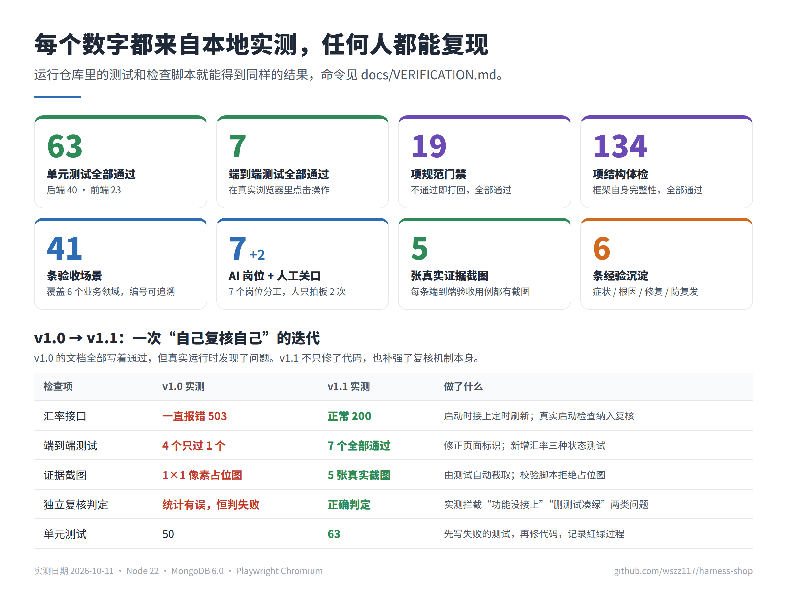
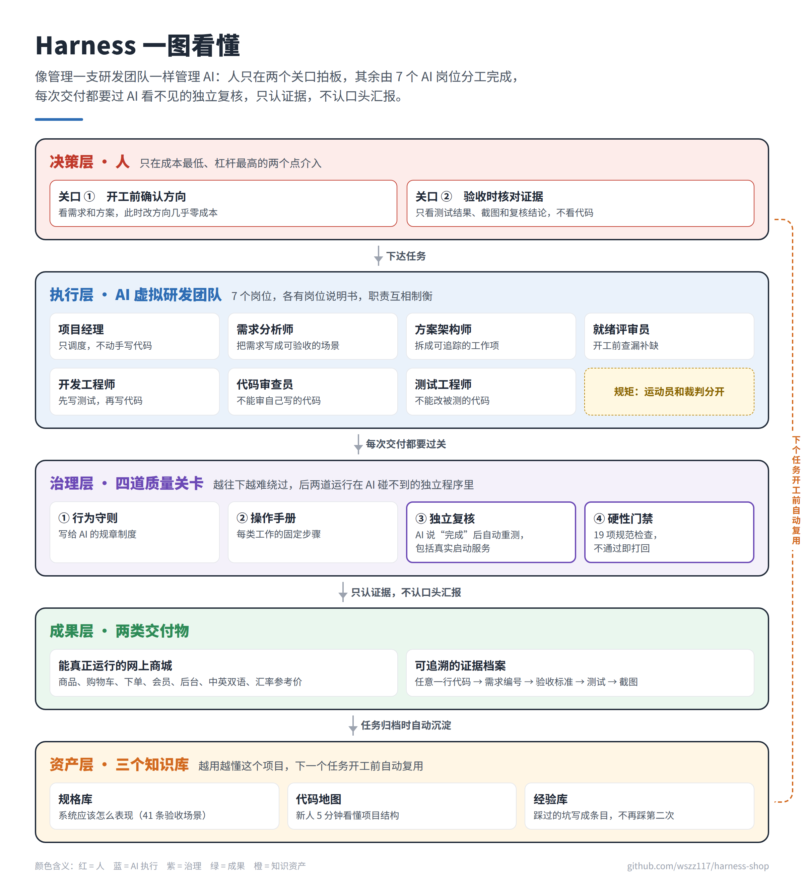
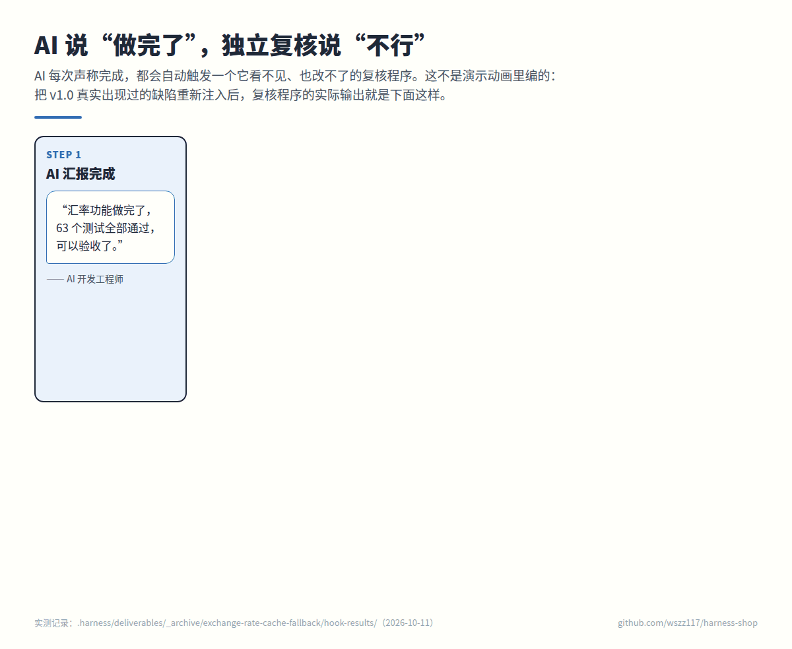
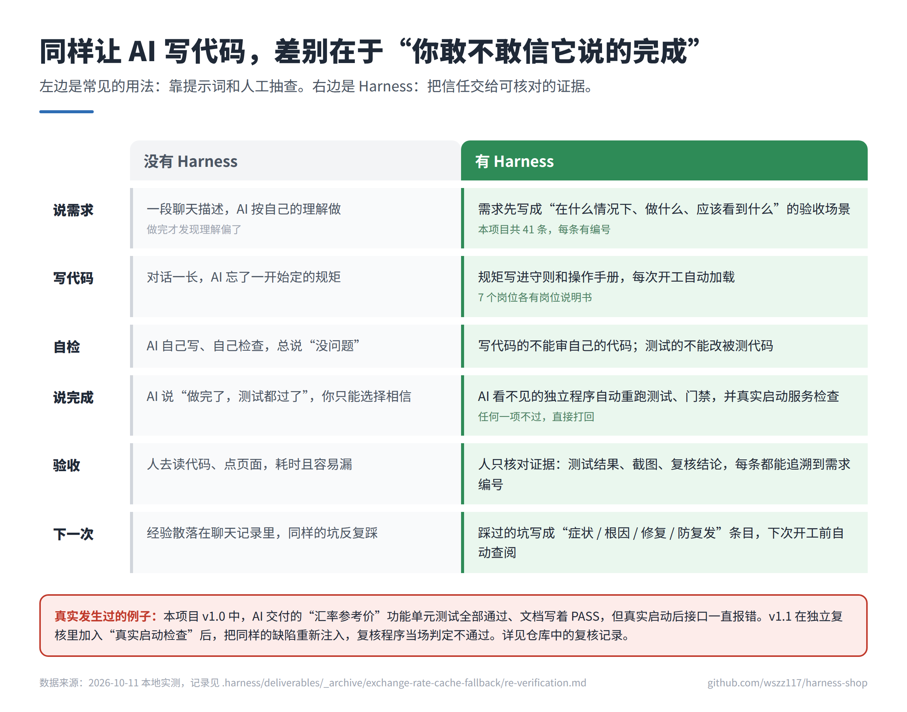
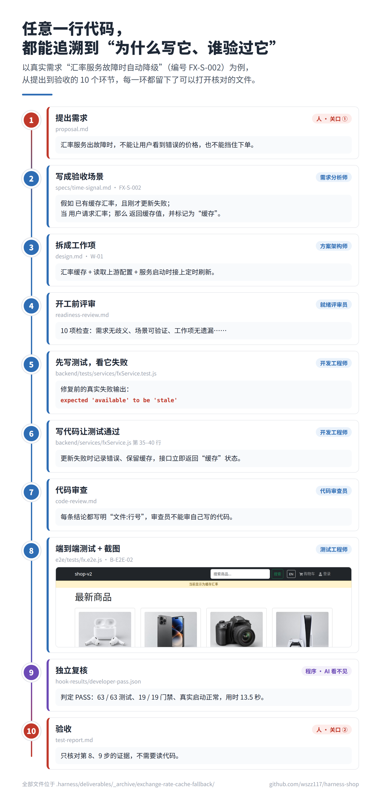
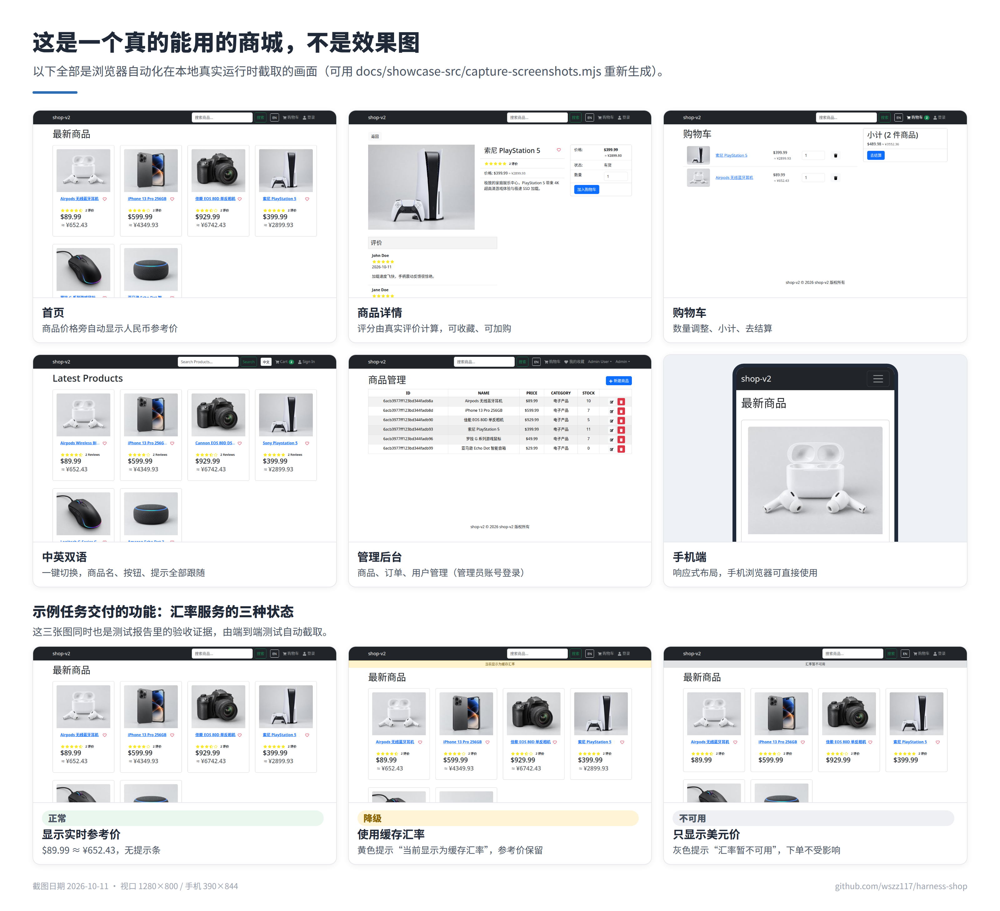
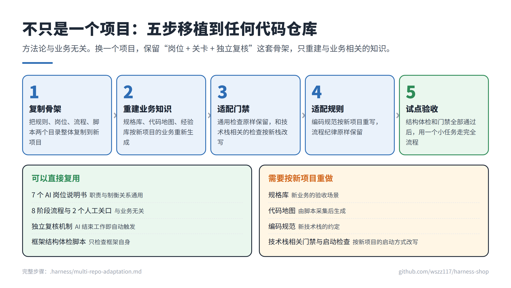

我们按“只认证据”的原则，把示例任务从头到尾重新验证了一遍，发现文档上写着“通过”的地方，有三处实际没有做到：
- 汇率功能真实运行时一直报错：零件都合格，组装时漏接了一根线
- 报告里的截图是 1×1 像素占位图：验收单上贴的“现场照片”是一张白纸
- 复核程序因统计错误永远判失败：安检门坏了，谁过都报警
连写文档的 AI 自己都会“真诚地”汇报错误结论，所以只能信机器拿到的证据。v1.1 修好了问题，也把对应检查加进了独立复核。

AI 已经能写代码了，团队真正头疼的是：它说完成了，你不敢信。Harness 不去“教 AI 诚实”，而是让它诚不诚实变得不重要：每次交付都由 AI 看不见的独立程序复核，人只在开工前和验收时各拍一次板。
数字均为 2026-10-11 本地实测，任何人可按 验证指南 复现。
这些不是模型不够聪明，而是缺少工程流程。换一个更强的模型，问题依然存在。
对话一长，AI 忘了开头定好的编码规范。
像新员工忘了入职培训测试不通过时，AI 去改测试，而不是改代码。
像考试不会做，就把题改简单让 AI 检查自己的代码，它总说没问题。
既当运动员又当裁判AI 说“做完了、测试能过”，实际并没有。
说报告写完了，却看不到文件人只在两个关口拍板；其余工作由 7 个分工明确的 AI 岗位接力完成；每一步都要过 AI 绕不开的质量关卡；成果和经验都沉淀下来，下一个任务直接复用。

7 个 AI 岗位各有岗位说明书：写代码的不能审自己的代码，测试的不能改被测代码，项目经理只调度不干活。
AI 声称完成时，自动触发它看不见的复核程序：重跑测试、19 项门禁、测试数量不能减少、真实启动服务检查功能。
验收标准沉淀为规格库，项目结构沉淀为代码地图，踩过的坑写进经验库，下一个任务开工前自动读取。
这不是演示动画里编出来的情节。下图中的输出，来自把 v1.0 真实出现过的缺陷重新注入后，复核程序的实际运行结果。


以一条真实需求为例，从提出到验收的 10 个环节，每一环都留下了可以打开核对的文件。

我们按“只认证据”的原则，把示例任务从头到尾重新验证了一遍，发现文档上写着“通过”的地方，有三处实际没有做到：

商品浏览、购物车、下单、会员、收藏、后台管理、中英双语、美元与人民币参考价。以下全部是浏览器自动化在真实运行时截取的画面。

